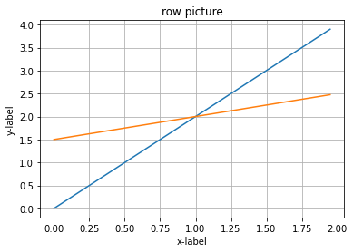
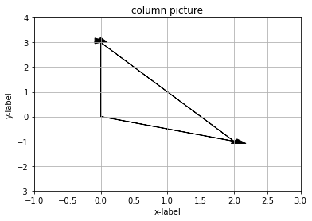

Lesson1到Lesson4的课程笔记。
Lesson 1
Example
\begin{cases}
2x - y&= 0 \cr
-x + 2y&= 3
\end{cases}
Row Picture
$$\left[\begin{matrix}2 & -1 \cr -1 & 2\end{matrix}\right]\left[\begin{matrix}x \cr y\end{matrix}\right] = \left[\begin{matrix}0 \cr 3\end{matrix}\right]$$
$$\boldsymbol{A\cdot X =b } $$
1 | import numpy as np |

Column Picture
$$\left[\begin{matrix}2 \cr -1 \end{matrix}\right] x + \left[\begin{matrix}-1 \cr 2 \end{matrix}\right] y = \left[\begin{matrix}0 \cr 3\end{matrix}\right]$$
1 | ax = plt.axes() |

1column_1 combines with 2column_2 equals column_3
to figure out what’re all the combination of (x, y) which can derive b
Can I solve AX = b for every b? Do the linear combination of the columns fill n-D space?
- Not all. If A is singular, then can’t.
The example is both a non-singular matrix and an invertible matrix
AX is a combination of columns of A.
Lesson 2
- key words: elimination, determinant, inverse of the matrix, augmented matrix, permutation matrix
- highlight:
- elimination(success or failure) – Gauss
- back substitution
- matrix multiplication
Elimination by linear algebra language
\begin{cases}
x + 2y + z &= 2 \cr
3x + 8y + z &= 12 \cr
4y + z &= 2
\end{cases}
1 | import numpy as np |
array([[1, 2, 1],
[3, 8, 1],
[0, 4, 1]])- knock out the x part of the equation two
1 | a[1,:] -= a[0,:] * 3 |
array([[ 1, 2, 1],
[ 0, 2, -2],
[ 0, 4, 1]])- leave the right side temperarily
- knock out the y part of the equation three
1 | a[2,:] -= a[1,:] * 2 |
array([[ 1, 2, 1],
[ 0, 2, -2],
[ 0, 0, 5]])- finally, we have the upper triangle
- pivot can’t be 0
failure situation
1 | c= np.array([[1,2,1],[3,6,3],[0,4,1]]) |
array([[1, 2, 1],
[0, 0, 0],
[0, 4, 1]])Back substitution
1 | d= np.array([[1,2,1,2],[3,8,1,12],[0,4,1,2]]) # augmented matrix 增广矩阵 |
array([[ 1, 2, 1, 2],
[ 0, 2, -2, 6],
[ 0, 0, 5, -10]])\begin{cases}
x + 2y + z &= 2 \cr
2y - 2z &= 6 \cr
5z &= -10
\end{cases}
Matrix multiplication
combining the columns:
$$\left[\begin{matrix}. & . & . \cr . & . & . \cr . & . & .\end{matrix}\right]\left[\begin{matrix}. \cr . \cr . \end{matrix}\right]$$
combining the rows
$$\left[\begin{matrix}. & . & . \end{matrix}\right]\left[\begin{matrix}. & . & . \cr . & . & . \cr . & . & .\end{matrix}\right]$$
- Step 1
$$\left[\begin{matrix}?\end{matrix}\right]\left[\begin{matrix}1 & 2 & 1 \cr 3 & 8 & 1 \cr 0 & 4 & 1\end{matrix}\right] = \left[\begin{matrix}1 & 2 & 1 \cr 0 & 2 & -2 \cr 0 & 4 & 1\end{matrix}\right]$$
$$\left[\begin{matrix}1 & 0 & 0 \cr -3 & 1 & 0 \cr 0 & 0 & 1\end{matrix}\right]\left[\begin{matrix}1 & 2 & 1 \cr 3 & 8 & 1 \cr 0 & 4 & 1\end{matrix}\right] = \left[\begin{matrix}1 & 2 & 1 \cr 0 & 2 & -2 \cr 0 & 4 & 1\end{matrix}\right]$$
1 | #证明： |
array([[ 1, 2, 1],
[ 0, 2, -2],
[ 0, 4, 1]])- Step 2
$$\left[\begin{matrix}?\end{matrix}\right]\left[\begin{matrix}1 & 2 & 1 \cr 0 & 2 & -2 \cr 0 & 4 & 1\end{matrix}\right] = \left[\begin{matrix}1 & 2 & 1 \cr 0 & 2 & -2 \cr 0 & 0 & 5\end{matrix}\right]$$
$$\left[\begin{matrix}1 & 0 & 0 \cr 0 & 1 & 0 \cr 0 & -2 & 1\end{matrix}\right]\left[\begin{matrix}1 & 2 & 1 \cr 0 & 2 & -2 \cr 0 & 4 & 1\end{matrix}\right] = \left[\begin{matrix}1 & 2 & 1 \cr 0 & 2 & -2 \cr 0 & 0 & 5\end{matrix}\right]$$
1 | #证明： |
array([[ 1, 2, 1],
[ 0, 2, -2],
[ 0, 0, 5]])- it is:
E_32 (E_21 A) = U
1 | E_32E_21 = np.matmul(E_32, E_21) |
(array([[ 1, 0, 0],
[-3, 1, 0],
[ 6, -2, 1]]),
array([[1., 0., 0.],
[3., 1., 0.],
[0., 2., 1.]]))inverse matrix
$$\left[\begin{matrix}1 & 0 & 0 \cr 3 & 1 & 0 \cr 0 & 0 & 1\end{matrix}\right]\left[\begin{matrix}1 & 0 & 0 \cr -3 & 1 & 0 \cr 0 & 0 & 1\end{matrix}\right] = \left[\begin{matrix}1 & 0 &0 \cr 0 & 1 & 0 \cr 0 & 0 & 1\end{matrix}\right]$$
$$E^{-1} E = I$$
1 | #证明 |
(array([[ 1., -0., -0.],
[ 3., 1., 0.],
[ 0., 0., 1.]]),
array([[ 1., 0., 0.],
[-0., 1., -0.],
[ 0., 2., 1.]]))1 | # 证明 A = UL |
array([[1., 0., 0.],
[3., 1., 0.],
[0., 2., 1.]])Permutation
exchange row 1 and 2
$$\left[\begin{matrix}0&1 \cr 1&0\end{matrix}\right]\left[\begin{matrix}a&b \cr c & d\end{matrix}\right] = \left[\begin{matrix}c& d \cr a &b\end{matrix}\right]$$exchange col 1 and 2
$$\left[\begin{matrix}a&b \cr c & d\end{matrix}\right]\left[\begin{matrix}0&1 \cr 1&0\end{matrix}\right] = \left[\begin{matrix}b&a \cr d&c\end{matrix}\right]$$
1 | a = np.array([[0,1],[1,0]]) |
(array([[11, 22],
[33, 44]]),
array([[33, 44],
[11, 22]]),
array([[22, 11],
[44, 33]]))Lesson 3
- key words:
- highlight:
- matrix multiplication (4 ways)
- inverse of $A$, $AB$, $A^{T}$
- Gauss-Jordan/find $A^{-1}$
Matrix multiplication 4 (+ 1) ways
$$AB = C$$
- The condition of the multiplication of the matrix:
The col number of A(m $\times$ n) must equal the row number of B(n $\times$ p)
Finally, C is m $\times$ p
Method 1 - regular way
for example,
$c_{32}$ = (row 3 of A) $\cdot$ (col 4 of B)
= $a_{31}b_{14}$ + $a_{32}b_{24}$ + $\cdots$
= $\sum_{k = 1}^{n}{a_{3k}b_{k4}}$
Method 2 - the column way
- cols of C are the combinations of cols of A
$$\left[\begin{matrix}|& & \cr|& & \cr|& & \end{matrix}\right]\left[\begin{matrix}|&|&| \cr |&|&| \cr |&|&| \end{matrix}\right] = \left[\begin{matrix}|& & \cr|& & \cr|& & \end{matrix}\right]$$
Method 3 - the row way
- rows of C are the combinations of rows of B
$$\left[\begin{matrix}-&-&- \cr & & \cr & & \end{matrix}\right]\left[\begin{matrix}-&-&- \cr -&-&- \cr -&-&- \end{matrix}\right] = \left[\begin{matrix}-&-&- \cr & & \cr & & \end{matrix}\right]$$
Method 4
- col of A times row of B
- sum all the sub matrix together
- $AB$ = $\sum_{}^{}{}$ (cols of $A$) $\times$ (rows of $B$)
$$\left[\begin{matrix}|& & \cr|& & \cr|& & \end{matrix}\right]\left[\begin{matrix}-&-&- \cr & & \cr & & \end{matrix}\right] = \left[\begin{matrix}-&-&- \cr-&-&-\cr-&-&-\end{matrix}\right]$$
Method 5 - blocks
$$\left[\begin{matrix}A_1 & A_2 \cr A_3 & A_4 \end{matrix}\right]\left[\begin{matrix}B_1 & B_2 \cr B_3 & B_4 \end{matrix}\right] = \left[\begin{matrix}A_1B_1 + A_2B_2&- \cr-&-\end{matrix}\right]$$
Inverses (square matrix)
$$A^{-1}A = I == AA^{-1}$$
1 | import numpy as np |
(array([[1.00000000e+00, 1.11022302e-16],
[0.00000000e+00, 1.00000000e+00]]),
array([[1.0000000e+00, 4.4408921e-16],
[0.0000000e+00, 1.0000000e+00]]))if $A^{-1}$ exists, it is invertible and nonsingular
- singular case
1 | np.array([[1,3],[2,6]]) |
array([[1, 3],
[2, 6]])1 | # example |
(array([[1, 3],
[2, 7]]),
array([[ 7., -3.],
[-2., 1.]]))$$\left[\begin{matrix}1 & 3 \cr 2 & 7 \end{matrix}\right]\left[\begin{matrix}a & c \cr b &d \end{matrix}\right] = \left[\begin{matrix}1 & 0 \cr 0 & 1\end{matrix}\right]$$
Gauss-Jordan
$$\left[\begin{matrix}1&3&1&0 \cr 2&7&0&1 \end{matrix}\right]$$
Step 1 $$\left[\begin{matrix}1&3&1&0 \cr 0&1&-2&1 \end{matrix}\right]$$
Step 2 $$\left[\begin{matrix}1&0&7&-3 \cr 0&1&-2&1 \end{matrix}\right]$$
In a word, $$\left[\begin{matrix} A&I \end{matrix}\right] = \left[\begin{matrix} I&A^{-1} \end{matrix}\right]$$
Lesson 4
- keywords: factorization
- highlight:
- Inverse of $AB$
- Transpose, $A^{T}$
- Product of elimination matrices, $A = LU$
Inverse
$$AA^{-1} = I = A^{-1}A$$
$$AB(B^{-1}A^{-1}) = I = B^{-1}A^{-1}AB$$
1 | #prove: |
array([[ 1.0000000e+00, -4.4408921e-16],
[ 0.0000000e+00, 1.0000000e+00]])Transpose
1 | m = np.arange(4).reshape((2,2)) |
(array([[0, 1],
[2, 3]]),
array([[0, 1],
[2, 3]]),
array([[0, 2],
[1, 3]]),
array([[0, 2],
[1, 3]]))$$AA^{-1} = I$$
$${(A^{-1})}^{T}A^{T} = I$$
$${(A^{-1})}^{T} = {(A^{T})}^{-1}$$
1 | #prove: |
array([[ True, True],
[ True, True]])$A = LU$
continue the Lesson 2
$$A = \left[\begin{matrix}2 & 1 \cr 8 & 7\end{matrix}\right]$$
$$\left[\begin{matrix}1 & 0 \cr -4 & 1\end{matrix}\right]\left[\begin{matrix}2 & 1 \cr 8 & 7\end{matrix}\right] = \left[\begin{matrix}2 & 1 \cr 0 & 3\end{matrix}\right]$$
$$E_{21}A = U$$
$$\left[\begin{matrix}2 & 1 \cr 8 & 7\end{matrix}\right] = \left[\begin{matrix}1 & 0 \cr 4 & 1\end{matrix}\right]\left[\begin{matrix}2 & 1 \cr 0 & 3\end{matrix}\right]$$
$$A = E_{21}^{-1} U$$
$$A = LU$$
L is lower triangular and has ones on the diagonal.
U is upper triangular and has the pivots on the diagonal.
$$\left[\begin{matrix}2 & 1 \cr 8 & 7\end{matrix}\right] = \left[\begin{matrix}1 & 0 \cr 4 & 1\end{matrix}\right]\left[\begin{matrix}2 & 0 \cr 0 & 3\end{matrix}\right]\left[\begin{matrix}1 & 1/2 \cr 0 & 1\end{matrix}\right]$$
$$A = LDU$$
$A = E_{21}^{-1} U$ is better than $E_{21}A = U$
- For example,
$E_{32}E_{21}$
$$\left[\begin{matrix}1 & 0&0 \cr 0&1 & 0 \cr 0 & -5 & 1\end{matrix}\right]\left[\begin{matrix}1 & 0&0 \cr -2&1 & 0 \cr 0 & 0 & 1\end{matrix}\right] = \left[\begin{matrix}1 & 0&0 \cr -2&1 & 0 \cr 10 &-5 & 1\end{matrix}\right] $$
- ${E_{21}}^{-1}{E_{32}}^{-1}$
$$\left[\begin{matrix}1 & 0&0 \cr 2&1 & 0 \cr 0 & 0 & 1\end{matrix}\right]\left[\begin{matrix}1 & 0&0 \cr 0&1 & 0 \cr 0 & 5 & 1\end{matrix}\right] = \left[\begin{matrix}1 & 0&0 \cr 2&1 & 0 \cr 0 &5 & 1\end{matrix}\right] $$
$A = LU$
if no row exchanges, multiplies go directly into L
How many operations on n$\times$n matrix A?
$n ^ {2} + (n - 1)^{2} + \dots + 2^{2} + 1 ^ {2} \approx 1/3 n ^{3}$
$O(n^{3})$